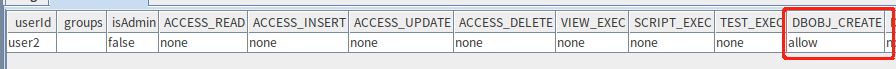
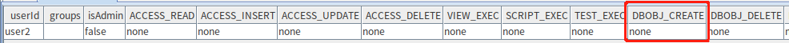
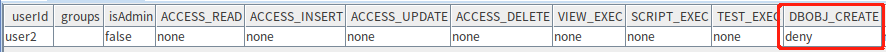
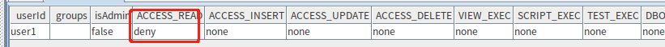
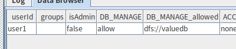
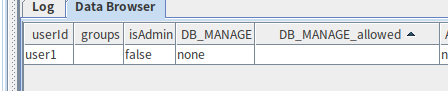
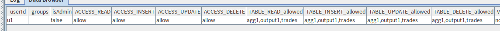

用户权限管理
在数据库产品使用过程中，为保证数据不被窃取、不遭破坏，我们需要通过用户权限来限制用户对数据库、数据表、视图等功能的操作范围，以保证数据库安全性。为此，DolphinDB 提供了具备以下主要功能的权限管理系统：
- 提供用户和组角色，方便权限控制
- 提供 20 种权限控制类别，适应各种场景
- 丰富的权限控制函数
- 函数视图兼顾保护数据隐私与提供分析结果
- 对任务调度和流数据任务动态鉴权，保证系统安全
- 使用 RSA 对用户关键信息加密
- 支持 SSO，保证安全通信，方便系统扩展
DolphinDB 在 1.30.21 和 2.00.9 版本中对权限管理主要做了如下升级，使权限控制更加精确、完善和方便：
- 新增数据库层面权限类型：DB_READ、DB_WRITE、DB_UPDATE、DB_DELETE、DB_INSERT
- 将原本的 TABLE_WRITE 权限细分为 TABLE_INSERT、TABLE_UPDATE、TABLE_DELETE
- 新增用户内存限制权限类型：QUERY_RESULT_MEM_LIMIT、TASK_GROUP_MEM_LIMIT
- 支持在数据节点执行权限相关函数
1. 角色
在未进行登录操作前，用户以 guest 身份访问 DolphinDB server，此时没有任何访问或操作数据库表的权限，也无法被赋予任何权限，需要执行 login 函数登录用户，具体的角色分类及创建用户方式等将在下述文章中介绍。
1.1. 角色分类
1.1.1. 用户和组
在权限管理系统中，DolphinDB 引入组的概念，便于对具有相同权限的用户进行权限配置和管理。
当权限管理需求发生变化，只需要修改一次组的权限，就可以应用于组内所有用户。
组的新成员可以获得组拥有的所有权限。
一个用户可以属于 0，1 或多个组，一个组里也可以包括 0，1 或多个用户。
用户和组都是权限的载体。我们可以赋予或禁止一个用户、一个组某项权限。用户最终的实际权限是用户本身的权限，加上所属组的权限的结果（详见用户和组权限确定规则）。
1.1.2. 管理员和超级管理员
DolphinDB 将管理员分超级管理员（super admin）和普通管理员（admin）。
DolphinDB 集群第一次启动时，会自动创建用户名为 "admin"，密码为 "123456" 的超级管理员。此超级管理员初始时便拥有所有的权限，且无法被删除，其权限也无法被剥夺。
所有用户（包括超级管理员）都可以通过 changePwd 修改自己的密码，或者通过管理员 resetPwd 修改密码。
1.1.3. 管理员和普通用户
除管理员以外的用户即为普通用户。
管理员可以通过 createUser 函数的 isAdmin 参数决定是否将创建的用户设置为管理员。
只有管理员可以创建、删除用户和组，赋予或禁止、撤销其他管理员，用户和组的权限，获取其他用户和组的相关信息。
只有管理员才能执行如下用户管理函数： resetPwd, createGroup, deleteGroup, createUser, deleteUser, addGroupMember, deleteGroupMember。
以下为超级管理员、管理员和普通用户的初始权限对照表：
| 超级管理员 | 管理员 | 非管理员用户 | |
|---|---|---|---|
| 是否需要手动创建 | 否 | 是 | 是 |
| 是否可以被删除 | 否 | 是 | 是 |
是否会被 getUserList 函数列出 | 否 | 是 | 是 |
| 是否有权创建和删除管理员、用户、组 | 是 | 是 | 否 |
| 是否有权赋予和禁止管理员、用户、组的权限 | 是 | 是 | 否 |
| 是否有权创建和删除函数视图 | 是 | 是 | 否 |
| 是否有权删除其他用户提交的任务 | 是 | 是 | 否 |
| 是否拥有所有类型的权限（权限类型介绍见 权限类别） | 是 | 否 | 否 |
1.2. 角色管理
注意：2.00.9 和 1.30.21 版本后，角色管理函数可以在数据节点执行，之前版本只允许在控制节点操作。
1.2.1. 管理用户
只有管理员可以创建用户：
login(`admin, "123456");//超级管理员登录 createUser("admin1","123456",,true)//创建普通管理员 login("admin1","123456")//普通管理员登录 createUser("user1","123456",,false)//普通管理员创建普通用户 createUser("user2","123456",,true)//普通管理员创建普通管理员
所有用户都可以修改自己的密码：
login("user1","123456")//登录用户 changePwd("123456","123456@")//修改自己的密码 logout("user1") login("user1","123456@")//修改密码成功
只有管理员可以修改其他用户的密码：
login("admin1","123456")//登录管理员用户 resetPwd("user1","123456")//修改其他用户密码 login("user1","123456")//修改密码成功
只有管理员可以删除用户：
login("admin1","123456")//登录管理员用户 deleteUser("user1")//删除用户 login("user1","123456")//用户删除成功 => The user name or password is incorrect
1.2.2. 管理组
只有管理员可以进行组的管理操作。
创建组：
createGroup("group1",["admin1"])
添加组成员：
addGroupMember(["user2"],"group1")
删除组成员：
deleteGroupMember(["user2"],"group1")
删除组：
deleteGroup("group1")删除组将不会删除组内成员，但会回收组的权限，单独对成员限权的操作不变；添加成员到组里后，该用户的权限会发生变化，详细权限判定规则见用户和组权限确定规则部分内容。
1.2.3. 查看角色信息
getGroupList：返回所有组名列表，只能由管理员执行getUsersByGroupId：返回属于指定组的用户，只能由管理员执行getGroupsByUserId：返回用户所在的组，只能由管理员执行getGroupAccess：返回组的权限，只能由管理员执行getUserList：获取除管理员之外的所有用户名，只能由管理员执行getUserAccess：返回指定用户所单独被赋予的权限，不包括用户所属组的权限。管理员可以查看所有用户的权限，普通用户只能查看自己的权限，没有指定 userId 时，返回当前登录用户的权限
相关函数用法，参考函数。
2. 权限管理
用户可以使用 grant，deny 和 revoke 命令来赋予权限、禁止权限，以及撤销权限设置，对应的权限状态为 Allow，Deny 和 None。
注意：2.00.9 和 1.30.21 版本后权限管理函数操作可以在数据节点执行，之前版本只允许在控制节点操作。
grant 命令：授予某个用户或某个用户组各类权限：
grant(`user2, DBOBJ_CREATE,"*") getUserAccess("user2")
revoke 命令：撤销某个用户或某个组的之前被赋予或禁止的权限：
revoke(`user2, DBOBJ_CREATE,"*") getUserAccess("user2")
deny 命令：拒绝某个用户或某个组的权限：
deny(`user2, DBOBJ_CREATE,"*") getUserAccess("user2")
3. 权限确定规则
3.1. 用户和组权限确定规则
将用户本身也视为一个特殊的组，用户本身的权限就是这个组的权限。用户的最终权限是其所属的所有组的权限共同决定的结果。组的存在简化了对用户权限的管理，与此同时也不免出现权限冲突的情况，以下为权限确定规则：
- 若用户在至少一组中被赋予某项权限，并且在其他组中没有禁止该项权限，则用户拥有该项权限
- 若用户在至少一组中被禁止某项权限，即使在其他组中被赋予该项权限，此用户的该项权限依然被禁止
例 1：若用户只属于一个组，用户对某个权限的状态为 Deny，所在组对当前权限的状态为 Allow，则最终用户对该权限的状态为 Deny：
login("admin","123456") createUser("user2","123456") createGroup("group1",["user2"]) deny(`user2, DB_OWNER)//禁止 user2 拥有 DB_OWNER 权限 grant(`group1, DB_OWNER)//赋予 group1DB_OWNER 权限 login("user2","123456") database("dfs://test",VALUE,1..10)//user2 没有 DB_OWNER 权限 => <NoPrivilege>Not granted to create or delete databases
例 2：若用户只属于一个组，用户对某个权限的状态为 None，所在组对当前权限的状态为 Allow，则最终用户对该权限的状态为 Allow：
login("admin","123456") revoke(`user2, DB_OWNER)//撤销禁止 user2 的 DB_OWNER 权限 grant(`group1, DB_OWNER)//赋予 group1DB_OWNER 权限 login("user2","123456") database("dfs://test",VALUE,1..10)//user2 拥有 DB_OWNER 权限
例 3：若用户只属于一个组，用户对某个权限的状态为 None，所在组对当前权限的状态为 Deny，则最终用户对该权限的状态为 Deny：
login("admin","123456") revoke(`user2, DB_OWNER)//撤销禁止 user2 的 DB_OWNER 权限 deny(`group1, DB_OWNER)//赋予 group1DB_OWNER 权限 login("user2","123456") database("dfs://test",VALUE,1..10)//user2 没有 DB_OWNER 权限 => <NoPrivilege>Not granted to create or delete databases
例 4：若用户属于多个组，某个组对某个权限的状态为 Deny，其他组对当前权限的状态为 Allow，则最终用户对该权限的状态为 Deny：
login("admin","123456") createGroup("group2",["user2"]) createGroup("group3",["user2"]) deny(`group1, DB_OWNER) grant(`group2, DB_OWNER) grant(`group3, DB_OWNER) login("user2","123456") database("dfs://test",VALUE,1..10)//user2 没有 DB_OWNER 权限 => <NoPrivilege>Not granted to create or delete databases
例 5：若用户属于多个组，某个组对某个权限的状态为 None，其他组对当前权限的状态为 Allow，则最终用户对该权限的状态为 Allow：
login("admin","123456") revoke(`group1, DB_OWNER) grant(`group2, DB_OWNER) grant(`group3, DB_OWNER) login("user2","123456") database("dfs://test",VALUE,1..10)//user2 拥有 DB_OWNER 权限
例 6：若用户属于多个组，某个组对某个权限的状态为 None，其他组对当前权限的状态为 Deny，则最终用户对该权限的状态为 Deny：
login("admin","123456") revoke(`group1, DB_OWNER) deny(`group2, DB_OWNER) deny(`group3, DB_OWNER) login("user2","123456") database("dfs://test",VALUE,1..10)//user2 没有 DB_OWNER 权限 => <NoPrivilege>Not granted to create or delete databases
例 7：若用户所在的组被删除，则以用户本身被赋予的权限为准：
login("admin","123456") createUser("user2","123456") createGroup("group1",["user2"]) grant(`user2, DB_OWNER)//赋予 user2 DB_OWNER 权限 deny(`group1, DB_OWNER)//禁止 group1 DB_OWNER 权限 deleteGroup(`group1)//删除 group1 login("user2","123456") database("dfs://test",VALUE,1..10)//user2 拥有 DB_OWNER 权限 ---------------------------------------------------------------- login("admin","123456") createGroup("group1",["user2"]) revoke(`user2, DB_OWNER)//回收 user2 DB_OWNER 权限 grant(`group1, DB_OWNER)//赋予 group1 DB_OWNER 权限 deleteGroup(`group1)//删除 group1 login("user2","123456") database("dfs://test",VALUE,1..10)//user2 没有 DB_OWNER权限
3.2. 数据库表权限确定规则
权限作用的对象范围从大到小可以分为：全局 (*)，数据库，表。
以下为库表级权限确定规则：
- 先小范围赋予/撤销/禁止权限，再大范围操作权限，此时小范围权限失效，会被大范围的权限覆盖
- 先大范围 allow, 再小范围 deny，此时 deny 操作生效，allow 权限覆盖的除 deny 以外的范围依旧是 allow
- 先大范围 allow, 再小范围 revoke，此时 revoke 操作无效，allow 权限覆盖的范围依旧是 allow
- 先大范围 deny, 再小范围 revoke，此时 revoke 操作无效，deny 权限覆盖的范围依旧是 deny
- 先大范围 deny, 再小范围 grant，1.30.21 和 2.00.9 版本前 grant 可以生效，deny 权限覆盖的除 grant 以外的范围依旧是 deny，1.30.21 和 2.00.9 版本后不支持此操作
- 先大范围 revoke, 再小范围操作权限，此时小范围权限操作生效
例 1：对用户 user1 deny 表级的 TABLE_READ 权限，然后 grant 全局 TABLE_READ 权限，此时 user1 拥有所有表的 TABLE_READ 权限：
login("admin", "123456") createUser("user1","123456") dbName = "dfs://test" if(existsDatabase(dbName)){ dropDatabase(dbName) } t = table(1..10 as id , rand(100, 10) as val) db=database(dbName, VALUE, 1..10) pt= db.createPartitionedTable(t, "pt", "id") pt.append!(t) deny("user1", TABLE_READ, dbName+"/pt") grant("user1", TABLE_READ, "*") login("user1", "123456") select * from loadTable(dbName, "pt")//user1 获得读 "dfs://test"的权限
例 2：对用户 user2 grant 表级的 TABLE_READ 权限，然后 deny 全局 TABLE_READ 权限，此时 user2 被禁止所有表的 TABLE_READ 权限：
login("admin", "123456") createUser("user2","123456") dbName = "dfs://test" if(existsDatabase(dbName)){ dropDatabase(dbName) } t = table(1..10 as id , rand(100, 10) as val) db=database(dbName, VALUE, 1..10) pt= db.createPartitionedTable(t, "pt", "id") pt.append!(t) grant("user2", TABLE_READ, dbName+"/pt") deny("user2", TABLE_READ, "*") login("user2", "123456") select * from loadTable(dbName, "pt")//user2 被禁止读 "dfs://test"
例 3：对用户 user3 grant 表级的 TABLE_READ 权限，然后 revoke 全局 TABLE_READ 权限，此时 user3 被回收所有表的 TABLE_READ 权限：
login("admin", "123456") createUser("user3","123456") dbName = "dfs://test" if(existsDatabase(dbName)){ dropDatabase(dbName) } t = table(1..10 as id , rand(100, 10) as val) db=database(dbName, VALUE, 1..10) pt= db.createPartitionedTable(t, "pt", "id") pt.append!(t) grant("user3", TABLE_READ, dbName+"/pt") revoke("user3", TABLE_READ, "*") login("user3", "123456") select * from loadTable(dbName, "pt")//user 被撤回读 "dfs://test" 的权限
例 4：先对用户 user1 grant 全局的 TABLE_READ 权限，然后 deny "dfs://test/pt" 表 TABLE_READ 权限，此时 user1 拥有除 "dfs://test/pt" 表外所有表的 TABLE_READ 权限：
login("admin", "123456") createUser("user1","123456") dbName = "dfs://test" t = table(1..10 as id , rand(100, 10) as val) if(existsDatabase(dbName)){ dropDatabase(dbName) } db=database(dbName, VALUE, 1..10) pt= db.createPartitionedTable(t, "pt", "id") pt.append!(t) grant("user1", TABLE_READ, "*") deny("user1", TABLE_READ, dbName+"/pt") login("user1", "123456") select * from loadTable(dbName, "pt")//user1被禁止读"dfs://test/pt"
例 5：先对用户 user1 grant 全局的 TABLE_READ 权限，然后 revoke "dfs://test/pt" 表 TABLE_READ 权限，此时 user1 仍然拥有所有表的 TABLE_READ 权限：
login("admin", "123456") createUser("user1","123456") dbName = "dfs://test" t = table(1..10 as id , rand(100, 10) as val) if(existsDatabase(dbName)){ dropDatabase(dbName) } db=database(dbName, VALUE, 1..10) pt= db.createPartitionedTable(t, "pt", "id") pt.append!(t) grant("user1", TABLE_READ, "*") revoke("user1", TABLE_READ, dbName+"/pt") login("user1", "123456") select * from loadTable(dbName, "pt")//user1 有读 "dfs://test/pt" 的权限
例 6：先对用户 user1 deny 全局的 TABLE_READ 权限，然后 revoke "dfs://test/pt" 表 TABLE_READ 权限，此时 user1 仍然被拒绝所有表的 TABLE_READ 权限：
login("admin", "123456") createUser("user1","123456") dbName = "dfs://test" if(existsDatabase(dbName)){ dropDatabase(dbName) } t = table(1..10 as id , rand(100, 10) as val) db=database(dbName, VALUE, 1..10) pt= db.createPartitionedTable(t, "pt", "id") pt.append!(t) deny("user1", TABLE_READ, "*") revoke("user1", TABLE_READ, dbName+"/pt") getUserAccess("user1")//TABLE_READ 依旧是 deny
例 7：先对用户 user1 deny 全局的 TABLE_READ 权限，然后 grant "dfs://test/pt" 表 TABLE_READ 权限，1.30.21 和 2.00.9 版本前，此时 user1 被赋予读 "dfs://test/pt" 表的权限，被拒绝其他所有表的 TABLE_READ 权限，而新版本则在执行 grant 的时候抛出异常：
login("admin", "123456") createUser("user1","123456") dbName = "dfs://test" if(existsDatabase(dbName)){ dropDatabase(dbName) } t = table(1..10 as id , rand(100, 10) as val) db=database(dbName, VALUE, 1..10) pt= db.createPartitionedTable(t, "pt", "id") pt1= db.createPartitionedTable(t, "pt1", "id") pt.append!(t) pt1.append!(t) deny("user1", TABLE_READ, "*") //新版本中执行grant报错 'Invalid grant: grant [dfs://test/pt] and [deny *] are in conflict' grant("user1", TABLE_READ, dbName+"/pt") login("user1", "123456") select * from loadTable(dbName, "pt")//老版本有读 dbName+"/pt" 的权限 select * from loadTable(dbName, "pt1")//老版本没有读其他表的权限
3.3. 权限确定规则兼容性
1.30.21 和 2.00.9 版本前，如果某个用户对两张不同表分别 grant 和 deny 相同的表层面权限（TABLE_READ 或 TABLE_WRITE），升级到新版本后该用户会拥有除 deny 的表以外所有表的该权限。举例如下：
1.30.21 和 2.00.9 版本以前，使用 grant 命令赋予或使用 deny 命令禁用用户 'user1'不同表对象的 TABLE_READ 权限后，'user1' 将只有 "dfs://valuedb/pt1" 表的读权限：
login("admin","123456") createUser("user1","123456") grant("user1",TABLE_READ,"dfs://valuedb/pt1") deny("user1",TABLE_READ,"dfs://valuedb/pt2")
升级到新版本后，user1 拥有 "dfs://valuedb" 库中除 pt2 以外所有表的读权限，等同于执行：
grant("user1",TABLE_READ,"dfs://valuedb/pt1") deny("user1",TABLE_READ,"dfs://valuedb/pt2")
4. 权限类别
注意：1.30.21 和 2.00.9 版本新增权限 DB_READ, DB_WRITE, DB_INSERT,DB_UPDATE, DB_DELETE, TABLE_INSERT, TABLE_UPDATE, TABLE_DELETE。
4.1. 库级权限类别
- DB_MANAGE：1.30.21 和 2.00.9 版本之前，可以创建以及删除数据库，可删除任何人所建数据库，包括具有 DB_OWNER 权限之用户所建数据库；1.30.21 和 2.00.9 版本之后不能创建数据库，只能删除数据库
- DB_OWNER：创建数据库并管理其创建的数据库，包括删除数据库、创建或删除数据表、增加或删除分区、可赋予、禁止或取消其他用户对自己创建的数据库的以下权限：TABLE_READ, TABLE_WRITE, TABLE_INSERT, TABLE_UPDATE, TABLE_DELETE, DBOBJ_CREATE, DBOBJ_DELETE, DB_READ, DB_WRITE, DB_INSERT, DB_UPDATE, DB_DELETE
- DBOBJ_CREATE：允许在数据库中建表
- DBOBJ_DELETE：允许在数据库中删除表
- DB_WRITE：允许写数据库所有表，包含表的增删改权限
- DB_INSERT：允许追加数据到某库所有表
- DB_UPDATE：允许更新某库所有表的数据
- DB_DELETE：允许删除某库所有表的数据
- DB_READ：允许读某库所有表
4.2. 表级权限类别
- TABLE_WRITE：允许增删改所有/指定数据表
- TABLE_READ：允许读取所有/指定数据表
- TABLE_INSERT：允许追加数据到指定表
- TABLE_UPDATE：允许更新指定表的数据
- TABLE_DELETE：允许删除指定表的数据
4.3. 其他权限类别
- VIEW_OWNER：普通用户（组）创建视图的权限。只有管理员才能 grant/deny/revoke 这个权限，此为 2.00.10.4/1.30.22.4 版本新增功能。普通用户（组）被赋予该权限后，可以进行以下操作：
- 可以创建视图（addFunctionView），且在创建视图后自动拥有该视图的 VIEW_EXEC 权限
- drop 自己创建的视图（dropFunctionView）
- 为其它用户 grant/deny/revoke 自己所创建视图的 VIEW_EXEC 权限
- 通过 getFunctionViews 查看自己创建的所有视图
- VIEW_EXEC：视图执行权限
- SCRIPT_EXEC：脚本执行权限
- TEST_EXEC：测试脚本执行权限
- QUERY_RESULT_MEM_LIMIT：限制用户的查询内存大小
- TASK_GROUP_MEM_LIMI：限制用户发送的批量子查询占用的内存大小
- COMPUTE_GROUP_EXEC：连接计算组的权限
4.4. 权限类别兼容性
- 1.30.21 和 2.00.9 版本前创建的用户，如果只拥有 DB_MANAGE 权限而没有 DB_OWNER 权限，升级到新版本就无法创建库，需要重新赋予 DB_OWNER 权限。
- 1.30.21 和 2.00.9 版本前创建的用户，如果被赋予 TABLE_WRITE 权限，升级到新版本后将同时拥有 TABLE_INSERT, TABLE_UPDATE, TABLE_DELETE 权限。
- 1.30.21 和 2.00.9 版本起，accessType=DB_OWNER 时
grant/deny/revoke命令中的 objs 若作用于库必须以"*"结尾，表示指定某个 dbName 的前缀范围：
login("admin", "123456") createUser("user1","123456") grant("user1", DB_OWNER,"*")//用户可以创建任意名称的数据库，且拥有该数据库的 DB_OWNER 权限 grant("user1", DB_OWNER,"dfs://test0*")//用户拥有以 "dfs://test0" 为前缀的数据库 DB_OWNER 权限
- 1.30.21 和 2.00.9 版本起，accessType=DB_MANAGE 时，使用
grant/deny/revoke命令需确保 objs 中指定的数据库已存在，否则将报错：
login("admin", "123456") createUser("user1","123456") grant("user1", DB_MANAGE,"dfs://test0") => The database [dfs://test0] does not exist grant("user1", DB_MANAGE, ["dfs://db1","dfs://db2"]) => The database [dfs://db1] does not exist
4.5. 权限回收
表级别的权限在指定表或用户删除的时候回收，库级别的权限在指定库或用户删除的时候回收，DB_OWNER 权限只在用户和该用户下所有库都删除的时候回收。
当权限操作的访问对象为共享内存表、流数据引擎时，权限不会因 server 重启或共享内存表、流数据引擎的删除而回收。当再次创建同名共享内存表、流数据引擎并对其进行访问控制时，对用户的权限操作依然生效。
例 1： "user1" 拥有 "dfs://valuedb/pt" 表的 TABLE_READ 权限，删除 "dfs://valuedb/pt" 表后重新创建，user1 用户的 TABLE_READ 权限被回收：
login("admin", "123456") dbName = "dfs://valuedb" t = table(1..10 as id , rand(100, 10) as val) if(existsDatabase(dbName)){ dropDatabase(dbName) } db=database(dbName, VALUE, 1..10) pt= db.createPartitionedTable(t, "pt", "id").append!(t) createUser("user1","123456") grant("user1", TABLE_READ,"dfs://valuedb/pt") login("user1", "123456") select * from loadTable( "dfs://valuedb",`pt)//此时user1 拥有"dfs://valuedb/pt"表的TABLE_READ权限 login("admin", "123456") dropTable(db,`pt) pt= db.createPartitionedTable(t, "pt", "id").append!(t) login("user1", "123456") select * from loadTable( "dfs://valuedb",`pt)//user1用户的TABLE_READ权限被回收
例 2： "user1" 拥有 "dfs://valuedb" 库的 DB_MANAGE 权限，删除 "dfs://valuedb" 库后重新创建，user1 用户的 DB_MANAGE 权限被回收：
login("admin", "123456") dbName = "dfs://valuedb" t = table(1..10 as id , rand(100, 10) as val) if(existsDatabase(dbName)){ dropDatabase(dbName) } db=database(dbName, VALUE, 1..10) pt= db.createPartitionedTable(t, "pt", "id").append!(t) createUser("user1","123456") grant("user1", DB_MANAGE,"dfs://valuedb") getUserAccess("user1")
此时 user1 拥有 "dfs://valuedb" 库的 DB_MANAGE 权限。
login("admin", "123456") if(existsDatabase(dbName)){ dropDatabase(dbName) } db=database(dbName, VALUE, 1..10) pt= db.createPartitionedTable(t, "pt", "id").append!(t) getUserAccess("user1")
此时 user1 用户的 DB_MANAGE 权限被回收。
例 3： "u1" 用户拥有流数据表 "trades"、"output1" 和流引擎 "agg1" 的读写权限：
login(`admin, `123456) createUser(`u1, "111111"); enableTableShareAndPersistence(streamTable(1000:0, `time`sym`volume, [TIMESTAMP, SYMBOL, INT]),`trades) share streamTable(1000:0, `time`sym`volume, [TIMESTAMP, SYMBOL, INT]) as output1 agg1 = createTimeSeriesEngine(name="agg1", windowSize=600, step=600, metrics=<[sum(volume)]>, dummyTable=trades, outputTable=output1, timeColumn=`time, useSystemTime=false, keyColumn=`sym, garbageSize=50, useWindowStartTime=false) grant("u1", TABLE_READ, "agg1") grant("u1", TABLE_WRITE, "agg1") grant("u1", TABLE_READ, "trades") grant("u1", TABLE_WRITE, "trades") grant("u1", TABLE_READ, "output1") grant("u1", TABLE_WRITE, "output1") getUserAccess(`u1)
重启或删除并创建同名流数据表 "trades"、"output1" 和流引擎 "agg1"，此时三个对象都没有访问控制，任何用户可以对其进行读写：
login(`admin, `123456) enableTableShareAndPersistence(streamTable(1000:0, `time`sym`volume, [TIMESTAMP, SYMBOL, INT]),`trades) share streamTable(1000:0, `time`sym`volume, [TIMESTAMP, SYMBOL, INT]) as output1 agg1 = createTimeSeriesEngine(name="agg1", windowSize=600, step=600, metrics=<[sum(volume)]>, dummyTable=trades, outputTable=output1, timeColumn=`time, useSystemTime=false, keyColumn=`sym, garbageSize=50, useWindowStartTime=false)
增加访问控制：
addAccessControl(`trades) addAccessControl(output1) addAccessControl(agg1)
此时只有用户 "u1" 和三个对象的创建者 "admin" 可以访问对象：
login(`u1, "111111") insert into agg1 values(2018.10.08T01:01:01.785,`A,10) insert into output1 values(2018.10.08T01:01:01.785,`A,10) insert into trades values(2018.10.08T01:01:01.785,`A,10)
其他用户被拒绝访问：
login(`u2, "111111") insert into agg1 values(2018.10.08T01:01:01.785,`A,10)=> No access to table [agg1]' insert into output1 values(2018.10.08T01:01:01.785,`A,10) => No access to table [output1]' insert into trades values(2018.10.08T01:01:01.785,`A,10) => No access to table [trades]'
5. 相关函数的权限校验
本章将介绍相关函数在 1.30.21 和 2.00.9 版本前（旧版）和后（新版）涉及的权限对比。
5.1. DDL 和 DML 相关函数
分布式表 DDL 和 DML 操作所需权限如下表所示：
| 操作 | 新版权限 | 旧版权限 |
|---|---|---|
| database 新建数据库 | 拥有 DB_OWNER 权限用户可以创建全局或指定前缀的数据库。 | 拥有 DB_MANAGE 或者 DB_OWNER 权限可以新建所有名字的数据库。 |
| database 加载已有的库 | 无校验 | 无校验 |
| dropDatabase | DB_MANAGE 用户可以删除任意或指定数据库；DB_OWNER 用户可以删除自己创建的数据库。 | DB_MANAGE 用户可以删除任何用户的数据库；DB_OWNER 用户可以删除自己创建的数据库。 |
| createTable | DB_MANAGE 用户可以创建任意或指定数据库下的表；DB_OWNER 用户可以在自己创建的数据库下建表；DBOBJ_CREATE 用户可以创建任意或指定数据库下的表。 | 当前数据库的创建者或者对当前数据库有 DBOBJ_CREATE 权限的用户可以创建该数据库下的表。 |
| dropTable | DB_MANAGE 用户可以删除任意或指定数据库下的表；DB_OWNER 用户可以在自己创建的数据库下删除表；DBOBJ_DELETE 用户可以删除任意或指定数据库下的表。 | DB_OWNER 权限用户可以删除自己创建的数据库下任何用户所创建的表；DB_MANAGE 用户可以删除自己创建的表；对当前数据库有 DBOBJ_DELETE 权限的用户可以删除该库中所有表。 |
| createPartitionedTable | DB_MANAGE 用户可以创建任意或指定数据库下的表；DB_OWNER 用户可以在自己创建的数据库下建表；DBOBJ_CREATE 用户可以创建任意或指定数据库下的表。 | 当前数据库的创建者或者对当前数据库有 DBOBJ_CREATE 权限的用户可以创建该数据库下的表。 |
| addPartitions(addValuePartitions/addRangePartitions) | DB_MANAGE 用户可以增加任意或指定数据库的分区；DB_OWNER 用户可以增加自己创建的数据库的分区。 | DB_MANAGE 用户可以增加任何数据库的分区；DB_OWNER 用户可以增加自己创建的数据库的分区。 |
| newValuePartitionPolicy=add 配置项 | 所有拥有写入表权限的用户，写入新分区会自动添加。 | 所有拥有写入表权限的用户，写入新分区会自动添加。 |
| dropPartition(deleteSchema=false) | DB_MANAGE 用户可以删除任意或指定数据库的分区；DB_OWNER 用户可以删除自己创建的数据库的分区； DB_DELETE 权限可以删除任意或指定数据库的分区；TABLE_DELETE 权限为全局时可以删除所有数据库分区。 | DB_OWNER 用户可以删除自己创建的数据库的分区；DBOBJ_DELETE 权限可以删除指定或全部数据库的分区。 |
| dropPartition(deleteSchema=true) | DB_MANAGE 用户可以删除任意或指定数据库的分区；DB_OWNER 用户可以删除自己创建的数据库的分区。 | DB_OWNER 用户可以删除自己创建的数据库的分区；DBOBJ_DELETE 权限可以删除指定或全部数据库的分区。 |
| renameTable | DB_MANAGE 用户可以 rename 任意或指定数据库下的表；DB_OWNER 用户可以在自己创建的数据库下 rename 表；DBOBJ_CREATE 用户可以 rename 任意或指定数据库下的表。 | DB_OWNER 权限用户可以 rename 自己数据库下的表；DBOBJ_DELETE 权限用户可以 rename 指定数据库下的表。 |
| addColumn | DB_MANAGE 可以增加任意或指定数据库下表的列；DB_OWNER 用户可以增加自己创建的数据库下表的列；DBOBJ_CREATE 用户可以增加任意或指定数据库下表的列。 | 拥有 DB_OWNER、DB_MANAGE 权限的用户可以对自己创建的表进行 addColumn；拥有 DBOBJ_CREATE 权限的用户可以对指定数据库下的表 addColumn。 |
| dropColumns! | DB_MANAGE 可以删除任意或指定数据库下表的列；DB_OWNER 用户可以删除自己创建的数据库下表的列；DBOBJ_CREATE 用户可以删除自己创建的表的列；DBOBJ_DELETE 用户可以删除任意或指定数据库下表的列。 | DB_MANAGE 用户可以删除任何数据库下表的列；DB_OWNER 用户可以删除自己的数据库下表的列。 |
| rename! | DB_MANAGE 可以 rename 任意或指定数据库下表的列；DB_OWNER 用户可以 rename 自己创建的数据库下表的列；DBOBJ_CREATE 用户可以 rename 任意或指定数据库下表的列。 | DB_MANAGE 用户可以 rename 任何数据库下表的列；DB_OWNER 用户可以 rename 自己的数据库下表的列。 |
| replaceColumn! | DB_MANAGE 用户可以 replace 任意或指定数据库下表的列；DB_OWNER 用户可以 replace 自己创建的数据库下表的列；DBOBJ_CREATE 用户可以 replace 任意或指定数据库下表的列。 | DB_MANAGE 用户可以 replace 任何数据库下表的列；DB_OWNER 用户可以 replace 自己的数据库下表的列。 |
| setColumnComment | DB_MANAGE 可以对任意或指定数据库下的表setColumnComment；DB_OWNER 用户可以对自己创建的数据库下表 setColumnComment；DBOBJ_CREATE 用户可以对任意或指定数据库下表 setColumnComment。 | 拥有 DB_OWNER、DB_MANAGE 权限的用户可以对自己创建的表进行 setColumnComment；拥有 DBOBJ_CREATE 权限的用户可以对指定数据库下的表 setColumnComment。 |
| truncate | 拥有 DBOBJ_CREATE、DB_OWNER、DB_MANAGE 权限的用户可以对自己创建的表进行 truncate；拥有 TABLE_WRITE/TABLE_DELETE/DB_WRITE/DB_DELETE 权限的用户可以对指定表进行 truncate；拥有 VIEW_EXEC 权限的用户可以执行视图中的 truncate。 | 拥有 DBOBJ_CREATE、DB_OWNER、DB_MANAGE 权限的用户可以对自己创建的表进行 truncate；拥有 TABLE_WRITE 权限的用户可以对指定表进行 truncate；拥有 VIEW_EXEC 权限的用户可以执行视图中的 truncate。 |
| append! | 拥有 DBOBJ_CREATE、DB_OWNER、DB_MANAGE 权限的用户可以对自己创建的表进行 append!；拥有 TABLE_WRITE、TABLE_INSERT、DB_WRITE、DB_INSERT 权限的用户可以对指定表进行 append!；拥有 VIEW_EXEC 权限的用户可以执行视图中的 append!。 | 拥有 DBOBJ_CREATE、DB_OWNER、DB_MANAGE 权限的用户可以对自己创建的表进行 append!；拥有 TABLE_WRITE 权限的用户可以对该表进行 append!；拥有 VIEW_EXEC 权限的用户可以执行视图中的 append!。 |
| upsert/SQL update | 拥有 DBOBJ_CREATE、DB_OWNER、DB_MANAGE 权限的用户可以对自己创建的表进行 upsert/update；拥有 TABLE_WRITE、TABLE_UPDATE、DB_DELETE、DB_UPDATE 权限的用户可以对指定表进行 upsert/update；拥有 VIEW_EXEC 权限的用户可以执行视图中的 upsert/update。 | 拥有 DBOBJ_CREATE、DB_OWNER、DB_MANAGE 权限的用户可以对自己创建的表进行 upsert/update；拥有 TABLE_WRITE 权限的用户可以对该表进行upsert/update；拥有 VIEW_EXEC 权限的用户可以执行视图中的 upsert/update。 |
| SQL delete | 拥有 DBOBJ_CREATE、DB_OWNER、DB_MANAGE 权限的用户可以对自己创建的表进行 delete；拥有 TABLE_WRITE、TABLE_DELETE、DB_WRITE、DB_DELETE 权限的用户可以对指定表进行 delete；拥有 VIEW_EXEC 权限的用户可以执行视图中的 delete。 | 拥有 DBOBJ_CREATE、DB_OWNER、DB_MANAGE 权限的用户可以对自己创建的表进行 delete；拥有 TABLE_WRITE 权限的用户可以对该表进行 delete；拥有 VIEW_EXEC 权限的用户可以执行视图中的 delete。 |
注意：在执行 addColumn、dropColumns!、renameColumns、replaceColumns、setColumnComment、rename!、renameTable 函数时，若用户所操作的表对象为其他用户所创建，需要给当前用户赋予表对象的 TABLE_READ 权限。
例如：
在用户 user1 创建的数据库中赋予 user2 DBOBJ_CREATE 权限并创建表 pt1:
login("admin", "123456") createUser("user1","123456",,true) createUser("user2","123456",,true) grant(`user1, DB_OWNER,"dfs://test*") login("user1", "123456") dbName = "dfs://test" if(existsDatabase(dbName)){ dropDatabase(dbName) } t = table(1..10 as id , rand(100, 10) as val) db=database(dbName, VALUE, 1..10) grant(`user2, DBOBJ_CREATE ,"dfs://test") login("user2", "123456") pt1= db.createPartitionedTable(t, "pt1",`id).append!(t)
此时若 user1 想要 rename 表 pt1 某一列，会报错：
login("user1", "123456") rename!(pt1,`val,`val1)// <NoPrivilege>Not granted to read table dfs://test/pt1'
需要赋予 user1 对 pt1 表的读权限：
login("admin", "123456") grant(`user1, TABLE_READ,"dfs://test/pt1")
此时 rename 成功：
login("user1", "123456") rename!(pt1,`val,`val1) schema(loadTable(dbName,`pt1)).colDefs ------------------------------------------ name typeString typeInt extra comment ---- ---------- ------- ----- ------- id INT 4 val1 INT 4
5.2. 可见性函数
可见性函数所需权限如下表所示：
| 函数 | 新版权限 | 旧版权限 |
|---|---|---|
| getAllDBs | 管理员返回当前节点上所有分布式数据库； 其他用户仅返回自己拥有 DB_MANAGE 权限或自己创建的分布式数据库 |
所有用户返回当前节点上所有分布式数据库 |
| getTables | 返回指定数据库中的所有表 | 返回指定数据库中的所有表 |
| getClusterDFSDatabases | 管理员返回当前节点上所有分布式数据库； 其他用户仅返回自己拥有 DB_MANAGE 权限或自己创建的分布式数据库 |
所有用户返回当前节点上所有分布式数据库 |
| getDFSDatabases | 管理员返回当前节点上所有分布式数据库； 其他用户仅返回自己拥有 DB_MANAGE 权限或自己创建的分布式数据库 |
所有用户返回当前节点上所有分布式数据库 |
| getDFSTablesByDatabase | 管理员可以返回当前节点上任一分布式数据库中的表； 其他用户仅返回自己拥有 DB_MANAGE 权限或自己创建的分布式数据库中的表 |
所有用户返回当前节点上所有分布式数据库中的表 |
注意：在新版本中，仅拥有 VIEW_EXEC 权限的用户无法获取上述函数结果。
6. 权限操作
本章将分别介绍权限操作在分布式数据库、共享内存表、流数据表、流数据引擎、视图、定时作业中的部分应用场景。
6.1. 分布式数据库
在分布式数据库中，可以通过 grant / deny / revoke 命令设置用户或者组的权限。在库级权限类别及表级权限类别节中的所有权限，可作为上述三个命令的 accessType 参数值。
其中，TABLE_READ，TABLE_WRITE，TABLE_INSERT，TABLE_UPDATE，TABLE_DELETE 权限作用范围为全局或表级。DBOBJ_CREATE，DBOBJ_DELETE，DB_READ，DB_WRITE，DB_INSERT，DB_UPDATE，DB_DELETE，DB_MANAGE，DB_OWNER 权限作用范围为全局或库级。
例 1：赋予用户 "user1" 全局的 TABLE_READ 权限：
grant(`user1, TABLE_READ, "*")例 2：赋予 "user1" 用户 "dfs://valuedb" 库下 pt 表的 TABLE_READ 权限：
grant(`user1, TABLE_READ,"dfs://valuedb/pt")例 3：赋予 "user1" 用户 "dfs://valuedb" 库的 DBOBJ_CREATE 权限：
grant(`user1, DBOBJ_CREATE,"dfs://valuedb")例 4：授权某个用户对某数据库中所有表的读写权限（1.30.21 和 2.00.9 版本新增功能）：
login("admin","123456") createUser("user1","123456") grant("user1",DB_READ,"dfs://valuedb") grant("user1",DB_WRITE,"dfs://valuedb")
此时 user1 拥有 "dfs://valuedb" 库中所有增删改查权限。
例 5：限制用户创建并管理以 "dfs://db0" 为前缀的数据库（1.30.21 和 2.00.9 版本新增功能）：
login("admin","123456") createUser("AlexSmith","123456") grant("AlexSmith", DB_OWNER, "dfs://db0*")
此时若用户 "AlexSmith" 创建以 "dfs://db1" 命名的数据库，会被拒绝。
例 6：赋予一个组中所有组员读某张表的权限，但只有部分组员有写权限：
login("admin","123456") createUser("user1","123456") createUser("user2","123456") createUser("user3","123456") createGroup("group1",["user1","user2","user3"]) grant("group1", TABLE_READ, "dfs://valuedb/pt") createUser("user4","123456") addGroupMember("user4","group1") grant("user1", TABLE_WRITE, "dfs://valuedb/pt") grant("user4", TABLE_WRITE, "dfs://valuedb/pt")
此时 user1 和 user4 拥有对 "dfs://valuedb/pt" 表的增删改查权限，user2 和 user3 只有对其查看的权限。
例 7：可以使用 grant 或 deny 对所有对象 (以*代表) 赋予或禁止权限。例如，赋予用户 JoeFlacco 可读任何 DFS 数据表的权限：
grant("JoeFlacco",TABLE_READ,"*")
当 grant 或 deny 所有对象后，若要撤销操作，只能使用 revoke 撤销所有对象的权限，若只撤销某个指定对象的权限，则操作无效：
revoke("JoeFlacco",TABLE_READ,"dfs://db1/t1")
以上命令无效。
revoke("JoeFlacco",TABLE_READ,"*")
以上命令取消了用户 JoeFlacco 可读任何 DFS 数据表的权限。
与之类似，使用 grant 或 deny 对组赋予或禁止权限后，只能对该组使用 revoke 来取消该权限设置。若对某个组员使用 revoke 来取消该权限，则无法生效。
例 8：有 DB_OWNER 权限的用户可以赋予别的用户对自己创建的数据库的权限。
管理员创建了两个用户，CliffLee 和 MitchTrubisky，其中用户 MitchTrubisky 拥有 DB_OWNER 的权限：
createUser(`CliffLee, "GH456$%") createUser(`MitchTrubisky, "JI3564^") grant(`MitchTrubisky,DB_OWNER);
MitchTrubisky 创建数据表 "dfs://dbMT/dt", 并赋予用户 CliffLee 读取该数据表的权限：
login(`MitchTrubisky, "JI3564^"); db = database("dfs://dbMT", VALUE, 1..10) t=table(1..1000 as id, rand(100, 1000) as x) dt = db.createTable(t, "dt").append!(t) grant(`CliffLee, TABLE_READ, "dfs://dbMT/dt");
尽管用户 CliffLee 之前没有被系统管理员赋予任何权限，但是 CliffLee 最后的权限为：可以访问 MitchTrubisky 创建的数据表 "dfs://dbMT/dt"。
6.2. 共享内存表
共享内存表会被共享到所有会话中，因此也会有权限管理的需求。系统支持对共享内存表进行写入和读取的权限管理，语法与数据库表权限管理一致。其中accessType 仅支持 TABLE_READ 和 TABLE_WRITE，分别表示对共享内存表的读和增删改权限。
注意：
- 只有创建表的用户或者管理员可以限制其他用户对该表的操作权限。
- 若用户使用
addAccessControl函数限制其他用户访问该用户创建的共享表，其他用户只有被管理员赋予访问权限后，才可访问该用户创建的共享表。 - 如果管理员已经为其他用户
grant/deny/revoke该表的权限，则该表自动添加权限限制，其他未经授权的用户无法再访问该表。 - 在集群中，通过
grant/deny/revoke管理用户对共享内存表的权限时，权限对象必须为 "nodeAlias:tableName"。
例子：
创建管理员 MitchTrubisky，登录 MitchTrubisky 并创建共享内存表 trades：
login(`admin, "123456"); createUser("MitchTrubisky","JI3564^",,true) login(`MitchTrubisky, "JI3564^") share streamTable(1000:0, `time`sym`volume, [TIMESTAMP, SYMBOL, INT]) as trades
此时所有用户都有读写 st1 表的权限：
createUser("CliffLee","JI3564^",,false) login("CliffLee","JI3564^") insert into trades values(1970.01.01T00:00:00.001,`sym,1) select * from trades
赋予用户 CliffLee 读取 trades 表的权限：
login(`MitchTrubisky, "JI3564^") grant("CliffLee", TABLE_READ, "trades")
如果在集群中，权限对象必须为 "nodeAlias:tableName"，例如 trades 在节点 dnode1：
grant("CliffLee", TABLE_READ, "dnode1:trades")
此时用户 CliffLee 拥有读取权限而写入则没有权限：
login("CliffLee","JI3564^") select * from trades insert into trades values(1970.01.01T00:00:00.001,`sym,1) => No access to table [trades]
如上对该表进行过第一次权限操作之后，该表自动添加权限限制。此时只有管理员和表创建者 MitchTrubisky 对该表有读写权限。
也可以取消用户 CliffLee 读取的权限：
login(`MitchTrubisky, "JI3564^") revoke("CliffLee", TABLE_READ, "trades") login("CliffLee","JI3564^") select * from trades => No access to shared table [trades]
若在建表后希望仅自己和管理员对共享内存表有访问权限，可以使用 addAccessControl 对于表增加权限控制：
share table(1:0, `time`sym`volume, [TIMESTAMP, SYMBOL, INT]) as st2 addAccessControl(st2)
6.3. 流数据
在集群中，通过 grant / deny / revoke 管理用户对流数据引擎或流表的权限时，权限对象必须为 "nodeAlias:tableName"。
6.3.1. 流数据引擎
用户可以使用命令 addAccessControl 限制其他用户访问流数据引擎。
例：
用户 u1 创建流数据引擎 agg1：
login(`admin, `123456) createUser(`u1, "111111"); createUser(`u2, "222222"); login(`u1, "111111") share streamTable(1000:0, `time`sym`volume, [TIMESTAMP, SYMBOL, INT]) as trades output1 = table(10000:0, `time`sym`sumVolume, [TIMESTAMP, SYMBOL, INT]) agg1 = createTimeSeriesEngine(name="agg1", windowSize=600, step=600, metrics=<[sum(volume)]>, dummyTable=trades, outputTable=output1, timeColumn=`time, useSystemTime=false, keyColumn=`sym, garbageSize=50, useWindowStartTime=false)
给 agg1 增加访问控制：
addAccessControl(agg1)
用户 u2 注入数据到引擎失败：
login(`u2, "222222") insert into agg1 values(2018.10.08T01:01:01.785,`A,10) // ERROR: No access to table [agg1]
给用户 u2 流数据引擎的写入权限：
login(`admin, `123456) grant("u2", TABLE_WRITE, "agg1")
如果在集群中，权限对象必须为 "nodeAlias:tableName"，例如 agg1 在节点 dnode1：
grant("u2", TABLE_READ, "dnode1:agg1")
用户 u2 访问时注入数据到引擎成功：
login(`u2, "222222") insert into agg1 values(2018.10.08T01:01:01.785+1..600,take(`A,600),1..600)
6.3.2. 订阅流数据表到流数据表
用户订阅流数据表到流数据表时需要有订阅表的 TABLE_READ 权限和写入流数据表的 TABLE_READ 和 TABLE_WRITE 权限。
例 1：u1 用户创建发布流数据表 trades 和订阅流数据表 output1 并调用 addAccessControl 对表进行访问管理：
login(`admin, `123456) createUser(`u1, "111111"); login(`u1, "111111") share streamTable(1000:0, `time`sym`volume, [TIMESTAMP, SYMBOL, INT]) as trades share streamTable(10000:0, `time`sym`sumVolume, [TIMESTAMP, SYMBOL, INT]) as output1 addAccessControl(`trades) addAccessControl(`output1)
u2 用户被赋予 trades 表的 TABLE_READ 权限和 output1 表的 TABLE_READ 和 TABLE_WRITE 权限后可以成功订阅：
login(`admin, `123456) grant("u2", TABLE_READ, "trades") grant("u2", TABLE_WRITE, "output1") grant("u2", TABLE_READ, "output1") login(`u2, "222222") subscribeTable(tableName="trades", actionName="agg1", offset=0, handler=append!{output1}, msgAsTable=true);
例 2：在集群中，权限对象必须为 "nodeAlias:tableName" 。
在远程节点 NODE2 创建发布表 trades 并进行权限管理：
login(`admin, `123456) def pubTable(){ share (streamTable(1000:0, `time`sym`volume, [TIMESTAMP, SYMBOL, INT]), `trades) addAccessControl(`trades) } rpc(`NODE2,pubTable) share streamTable(10000:0, `time`sym`sumVolume, [TIMESTAMP, SYMBOL, INT]) as output1
本地节点用户订阅需要 NODE2 节点 trades 表的 TABLE_READ 权限：
createUser(`u1, "111111"); grant("u1", TABLE_READ, "NODE2:trades") login(`u1, "111111") subscribeTable(server=`NODE2,tableName="trades", actionName="agg1", offset=0, handler=append!{output1}, msgAsTable=true);
6.3.3. 订阅流数据表到分布式表
用户订阅流数据表到分布式表时需要分布式表的 TABLE_WRITE 权限。
例：管理员创建发布表 trades 和订阅分布式数据库 "dfs://valuedb/pt"：
login(`admin, `123456) dbName = "dfs://valuedb" t = table(10000:0, `time`sym`sumVolume, [TIMESTAMP, SYMBOL, INT]) insert into t values(2018.10.08T01:01:01.785+1..600,take(`A,600),1..600) if(existsDatabase(dbName)){ dropDatabase(dbName) } db=database(dbName, VALUE, 1..10) pt= db.createPartitionedTable(t, "pt", "sumVolume").append!(t) share streamTable(1000:0, `time`sym`volume, [TIMESTAMP, SYMBOL, INT]) as trades
授权 u2 用户订阅分布式表的 TABLE_WRITE 权限：
createUser(`u2, "222222"); grant("u2", TABLE_WRITE,"dfs://valuedb/pt")
u2 成功订阅到数据：
login(`u2, "222222") def saveTradesToDFS(mutable dfsTrades, msg): dfsTrades.append!(msg) subscribeTable(tableName="trades", actionName="agg1", offset=0, handler=saveTradesToDFS{pt}, msgAsTable=true); login(`admin, `123456) select * from loadTable(dbName,`pt)
6.4. 视图权限
函数视图提供了一种灵活的方式来控制用户访问数据库和表。在视图的基础上，函数视图提供了函数功能，可以同时访问数据库并进行相关计算。
注意：
- 只有系统管理员有创建和删除函数视图的权限。用户即使不具备读写数据库原始数据的权限，也可通过执行函数视图，间接访问数据库，得到所需计算结果
- 如果函数视图和本地的函数重名，调用时系统会解析为本地函数
- 某些操作只需要 VIEW_EXEC 权限就可以在 FunctionView 中执行，详见表 DDL 和 DML 相关函数
- VIEW_EXEC 的权限作用对象（objs）由高到低分为全局 (*)、命名空间 (<namespace>::*)、函数视图三个层级。权限可以设置为对所有函数视图生效，或针对特定函数视图生效，也可以按命名空间进行批量管理。当命名空间存在多层嵌套时，权限必须设置到 module 一层，暂不支持在更高层次的命名空间进行批量权限管理。
例 1：管理员定义一个函数视图：
def countTradeAll(){
return exec count(*) from loadTable("dfs://TAQ","Trades")
}
addFunctionView(countTradeAll)
grant("NickFoles",VIEW_EXEC,"countTradeAll") 以用户名 NickFoles 登录，执行视图 "countTradeAll"：
countTradeAll()
在此例中，虽然用户 NickFoles 没有访问表 "dfs://TAQ/Trades" 的权限，但是可以运行函数视图 "countTradeAll" 获取表的行数。
例 2：函数视图也可以带参数。用户在使用的时候可以输入参数获取相应的结果。
创建一个函数视图，获取某一个股票在某一天的所有交易记录：
def getTrades(s, d){
return select * from loadTable("dfs://TAQ","Trades") where sym=s, date=d
}
addFunctionView(getTrades)
grant("NickFoles",VIEW_EXEC,"getTrades") 同样在此例中，用户 NickFoles 没有访问表"dfs://TAQ/Trades"的权限，但是可以执行视图“getTrades”，指定股票代码 IBM 和日期 2018.07.09，获得 IBM 在 2018.07.09 这一天的所有交易记录：
getTrades("IBM", 2018.07.09)
例 3：通过命名空间对函数视图进行批量管理。
在 [home]/modules/dir1/myModule.dos 文件中定义函数，并在文件第一行声明为模块，文件内容如下：
module dir1::myModule
def f1(){
print "dir1::myModule::f1"
}
def f2(){
print "dir1::myModule::f2"
}使用 use 语句引用后，可通过 addFunctionView 函数一次将该模块中所有函数添加为函数视图。
use dir1::myModule
addFunctionView(moduleName="dir1::myModule")
getFunctionViews()| name | body |
|---|---|
| dir1::myModule::f1 | def f1(){ print("dir1::myModule::f1")} |
| dir1::myModule::f2 | def f2(){ print("dir1::myModule::f2")} |
为用户 user1 授权执行 dir1::myModule 命名空间下的所有函数视图
grant(userId="user1", accessType=VIEW_EXEC, objs="dir1::myModule::*")禁止用户 user2 执行 dir1::myModule 命名空间下的所有函数视图
deny(userId="user2", accessType=VIEW_EXEC, objs="dir1::myModule::*")命名空间必须明确到 module 层级。例如 dir1::myModule 模块，不能在 dir1 层级进行权限管理。
grant(userId="user1", accessType=VIEW_EXEC, objs="dir1::*")// Error：The Module [dir1::*] does not exist.6.5. 定时作业权限
定时作业是指用户指定在特定的时间，以特定的频率执行一系列任务，多用于批处理类业务场景。
- 当用户创建定时作业（函数
scheduleJob）时，若作业中包含库/表的读写或修改操作，不需要具备相关的权限也能成功创建。但执行定时作业时，需要具备与对象相关的权限，否则无法执行 - 系统管理员可以
deleteScheduledJob删除其他用户定时作业，非管理员用户只能删除自己创建的定时作业
login("NickFoles","AB123!@") def readTable(){ read_t1=loadTable("dfs://db1","t1") return exec count(*) from read_t1 } scheduleJob("readTableJob","read DFS table",readTable,minute(now()),date(now()),date(now())+1,'D');
不管 NickFoles 有没有读 "dfs://db1/t1" 的权限，"readTable" 任务都能设置成功。
在 "readTable" 任务实际运行时，如果用户 NickFoles 有读 "dfs://db1/t1" 的权限，则成功执行，否则鉴权失败。
6.6. 脚本执行权限
SCRIPT_EXEC，TEST_EXEC 权限作用范围为全局。
用户执行 run 函数，或在客户端运行脚本都需要 SCRIPT_EXEC 权限：
login(`admin, `123456) createUser(`user1, "123456"); grant(`user1,SCRIPT_EXEC) login(`user1, "123456") run("test.txt")
用户执行 test函数，或在客户端执行 unittest 都需要 TEST_EXEC 权限：
login(`admin, `123456) createUser(`user1, "123456"); grant(`user1,TEST_EXEC) login(`user1, "123456") test("test.txt")
6.7. 内存限制权限
grant 指定 accessType = QUERY_RESULT_MEM_LIMIT 来限制某个用户查询返回结果的内存上限和 accessType = TASK_GROUP_MEM_LIMIT 限制发送的批量子查询占用的内存上限，等同于 setMemLimitOfQueryResult 函数和 setMemLimitOfTaskGroupResult 函数，区别在于 grant 只对指定用户生效（暂不支持用户组），setMemLimitOfQueryResult 函数和 setMemLimitOfTaskGroupResult 函数对所有用户生效。
下述脚本限制用户“AlexSmith”查询时，查询结果所占用的内存大小不能超过 4 GB：
grant("AlexSmith", QUERY_RESULT_MEM_LIMIT, 4)
下述脚本限制用户“AlexSmith”查询时，发送的批量子查询占用的内存不能超过 4 GB：
grant("AlexSmith", TASK_GROUP_MEM_LIMIT, 4)
7. 使用 HTTPS 实现安全通信
DolphinDB 支持使用 HTTPS 安全协议与 web notebook、VSCode 等编辑器进行通信。
7.1. 使用 HTTPS 配置
DolphinDB 提供两种配置 HTTPS 的方法：
- 在控制节点的配置文件中添加
enableHTTPS=true - 在启动控制节点的命令行添加
-enableHTTPS true
./dolphindb -enableHTTPS true -home master -publicName www.psui.com -mode controller -localSite 192.168.1.30:8500:rh8500 -logFile ./log/master.log
7.2. HTTPS 证书设置
DolphinDB 使用服务端证书验证的安全策略。默认情况下，会生成自制证书，客户需要安装服务端的证书，否则浏览器提示不安全连接。在集群环境中，每个节点分布在不同的物理机器上，每台物理 server 需要一份证书，因此控制节点和代理节点需要生成证书，数据节点使用同一个物理服务器上代理节点生成的证书。用户也可购买经过第三方认证的证书。
7.2.1. 第三方认证证书
将第三方证书重命名为 server.crt，并且拷贝到控制节点和代理节点的 home 目录下的 keys 文件夹中，若 keys 文件夹不存在，则需手动创建。由于第三方证书经过公认的权威授权机构颁布，所以浏览器默认信任该证书，不需要再手动安装。绝大部分应用场景适合使用此方式。
7.2.2. 安装自制证书
在小型封闭集群内部通信时，用户也可以使用自制证书进行 OPENSSL 安全通信，具体过程如下：
把 publicName 设置为计算机的域名。
在集群控制节点的配置文件 (controller.cfg) 中加上
publicName=www.ABCD.com，或者在命令行窗口启动控制节点时加上-publicName www.ABCD.com。检查证书是否生成。
启动控制节点，并且检查证书文件 server.crt 和服务器的独立密钥 serverPrivate.key 是否存在主目录的 keys 目录下。
把自签名证书安装到浏览器的证书颁发机构，例如：
在 Google Chrome，选择 设置->隐私和安全->安全->管理设备证书->Import，把 server.crt 导入。
在浏览器地址栏中输入 "https://www.ABCD.com:8500/" 连接到 DolphinDB 集群管理器，其中 8500 是控制节点的端口。
8. 支持 SSO (Single Sign On)
DolphinDB 的控制节点通过 OpenSSL ticket 为客户端提供安全通信支持。
DolphinDB 提供两个用于 SSO 的 API 函数：
getAuthenticatedUserTicket()获取当前登录用户的加密 ticketauthenticateByTicket(ticket)使用上面获取的 ticket 登录系统
DolphinDB 的开发者可以方便安全的使用这些接口来对系统进行扩展。